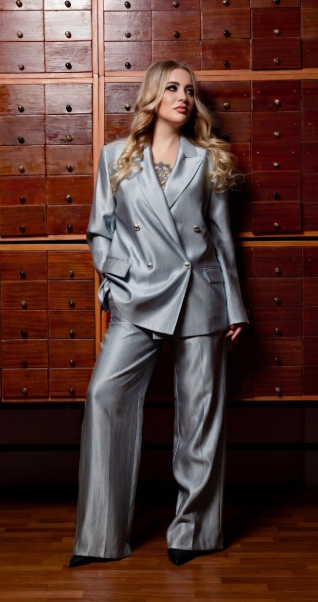

Персональное beauty-пространство · Тула
Пространство красоты для лица и тела
Уходовые и эстетические процедуры, которые подбираются не по моде, а по состоянию кожи, тела и вашему личному запросу.
Красоту не навязывают. Её собирают — спокойно, бережно и поэтапно.
- Лицо и тело
- Индивидуальный подбор
- Уход без перегруза
- Рекомендации после визита

Создаю красоту
Не проблемы, а состояния
Когда хочется снова нравиться себе в зеркале
Первый шаг — не выбрать процедуру из списка. Первый шаг — понять, что сейчас происходит с кожей, лицом или телом, и какой уход будет уместен именно сейчас.
Направления работы
Уход без перегруза
Направления, из которых собирается ваш уход — по состоянию, а не по списку услуг.
Подход
Сначала смотрим на вас. Потом выбираем процедуру
В уходе за лицом и телом важна не скорость, а точность. Одна и та же процедура может быть уместной для одного человека и лишней для другого.
Работа начинается с разговора, оценки состояния кожи или тела и понимания того, какой результат для вас действительно будет комфортным.
Первый визит
Первый визит — это не экзамен и не обязательство на курс
Результаты
Результаты, которые видны без лишних слов
Здесь размещаются реальные примеры работы: лицо, тело, качество кожи, визуальные изменения после процедуры или курса.
Результат индивидуален и зависит от исходного состояния кожи или тела, образа жизни, регулярности ухода и соблюдения рекомендаций. Есть противопоказания, перед процедурой нужна консультация специалиста.
Об Анастасии
Красота начинается с внимательного взгляда
В моей работе важно не просто выполнить процедуру, а увидеть человека: как меняется лицо, как тело реагирует на стресс, как клиент чувствует себя в зеркале.
Я за уход, который не спорит с внешностью, а помогает ей раскрыться мягче, чище и увереннее.
Отзывы
После процедуры важно не только зеркало, но и ощущение себя
FAQ
Вопросы, которые лучше задать до процедуры
Контакты и запись
Начните с сообщения
Напишите, что хотите изменить или какой уход ищете. Не обязательно знать название процедуры — достаточно описать, что вас беспокоит.